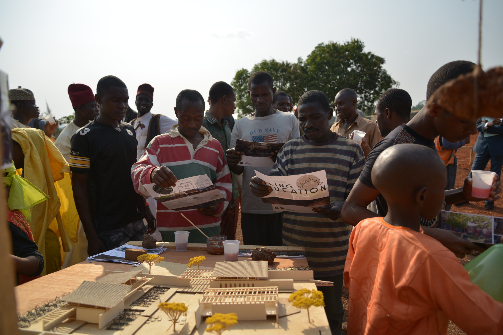
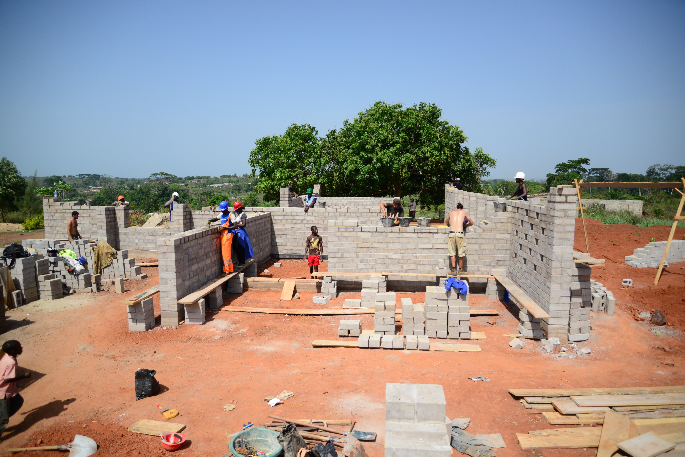

“Tell me and I’ll forget; show me and I
may remember; involve me and I’ll understand.”
Chinese proverb
Education has proven to be the most effective means and instrument to achieving goals set out in developmental programmes, to reducing mortality rates, to increasing people’s self consciousness about their health and to enabling them to take responsibility for their own options. Also, education has made it possible for millions of people of different communities around the world to become aware of the things happening around them and to actively take part in social life. 
In this respect, Hope Foundation is working together with 15 students of architecture of the Technische Universität (TU) Berlin on building and erecting a primary school in Bertoua, the capital city of the eastern region of Cameroon (Est). Construction work began in January 2014 and the school is expected to be opened in September 2015. With this, the Hope Foundation is carrying out one of the MDGs (Millenium Development Goals) according to which universal primary education is to be made available to each and every child in order to ensure access to schooling. The school in Bertoua has a two-fold objective: the school will mainly function as a bilingual pre-school for 50 children aged 3 to 6 years and as a primary school for 250 children who shall be receiving a basic education for six years. Moreover, in the afternoons it will be used as a centre for training and continual education, where seminars and skill-gaining workshops will be offered to older youths and adults.
The course of events of the project was planned as follows: in 2013 the preparations for the ‘Rising Education’ project were initiated with the students of the TU Berlin providing their designs for the building complex and the Hope Foundation simultaneously carrying out the acquisition of grants and funding sources and contacting further partners for the project. The first construction phase went on from January to March 2014. During this, the site was straightened and prepared for construction. At the same time, foundation works and initial masonry was begun as a first step to constructing the administrative block and the first class room. In the subsequent second construction phase, set to last from November 2014 to February 2015, as well as the third construction phase, set to last from March to May 2015, the construction works are to be finalized and the building complex is to be completed step by step In June and July 2015 the final steps prior to handing over the school are to take place, such as the installation of electricity supply, the sanitary blocks etc. Also during this phase, the staff members of the school are to be selected as well as the students. This shall be based on meetings and discussions of the ‘Parents Teachers Association’ (PTA), which will also be established in the course of the upcoming spring.
The idea for this project stems from the observation
that Bertoua is one the poorest and most neglected parts of Cameroon and that
there is a large need for schools, educational institutions and improved
educational standards in order to achieve a more preferable development. Schooling
is the key to be able to develop personal strengths in order to later have the
possibility to pursue a good education – this on the other hand being the means
to achieving own occupational goals. This project shall combine the concept of
sustainable construction and the direct involvement of the local population in
the region and the 15 students of architecture. In this way, each and every
member of the commun ity can make their own contribution to achieve the goals
set out. Through this project, all parts involved can share and exchange their
knowledge as well as their skills and abilities in order to help the community
and to support the development of Bertoua and the surrounding region.
ity can make their own contribution to achieve the goals
set out. Through this project, all parts involved can share and exchange their
knowledge as well as their skills and abilities in order to help the community
and to support the development of Bertoua and the surrounding region.
In cooperation with 15 students of architecture of the TU Berlin, the Hope Foundation organizes a range of activities and events to collect donations. Projects of this sort are always dependant on support in form of personal time or money. With such help we have been able to lay down the foundations for our school and have thus achieved first successes. The further steps towards completing the construction of the multi-purpose school can be achieved with your help! Every form and size of donations contributes to the project and is accepted gratefully.